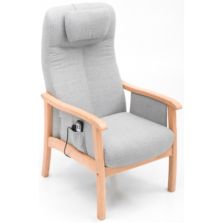
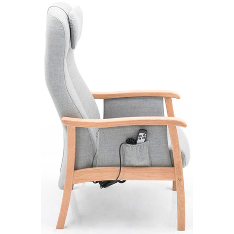
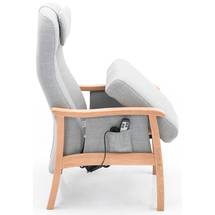
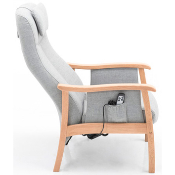

Belangrijkste kenmerken:
- 100% Ergonomisch zitcomfort
- Geleverd met kwaliteitsgarantie
- Volledig op uw lichaamsmaat afgesteld
Senioren sta-op stoel HK Dordt
Technische specificaties:
Over de Senioren sta-op stoel HK Dordt
De Senioren sta-op stoel HK Dordt is heeft een heerlijk stevig zitcomfort.
Deze wolf in schaapskleren heeft meer functies dan men in eerste instantie zou vermoeden. Naast de elektrisch verstelbare sta-op verstelling heeft deze fauteuil een elektrisch verstelbare rugleuning. Hiermee kan u de ideale zit gemakkelijk instellen.
De armleuningen van Senioren sta-op stoel HK Dordt zorgen voor stabiele steun bij het opstaan.
De kwaliteit van interieur, romp en stoffering voldoet aan de hoogste normen. De fauteuil is leverbaar in vele stof- en leervarianten. Het eikenhouten frame is leverbaar in diverse kleuren en dus geheel naar uw smaak op te bouwen. Er is ook een bijpassend voetenbankje.
U verdient persoonlijke aandacht, niet bij wijze van uitzondering, maar elke dag. Uw stoel wordt op den duur een kostbaar persoonlijk bezit. De stoel is immers helemaal op uw persoonlijke zitcomfort afgestemd. Zo’n stoel geeft u weer nieuwe energie.
Wilt u deze stoel rustig proberen in onze showroom of bij u thuis?
Onze zitspecialisten stellen de stoel direct exact af op uw lichaamslengte en zithouding. Geheel kosteloos en zonder verplichtingen.